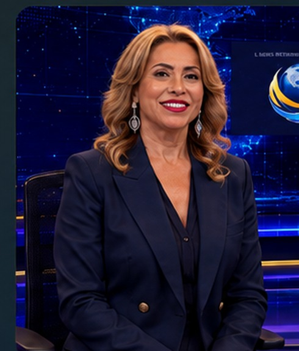
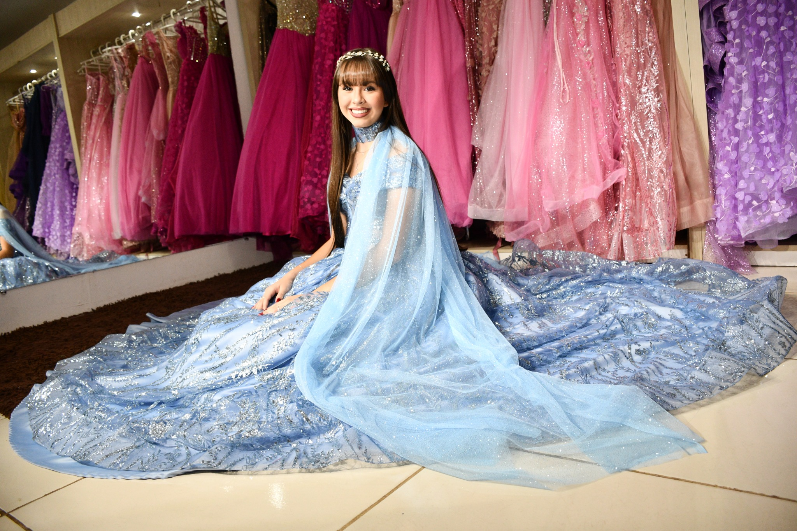

Credibilidade histórica da TV Voz de Brasília.
✨ TV Voz de Brasília • 40 anos de credibilidade
Consolidação de uma marca40 anos de credibilidade
Uma trajetória sólida em mídia, entrevistas e posicionamento comercial, agora apresentada em uma plataforma mais forte, mais elegante e mais profissional.
40 anosde credibilidade
● AO VIVO
VOZ NEWS • BRASÍLIA • BRASIL • MUNDO
Pronto para iniciar.
TV Voz NEWS
Principais manchetes do Brasil e do mundo
Manchete em destaque.

Deijanete Fayad
Paulo Fayad
Preparando apresentação…
MERCADO & CLIMA
Carregando cotações e clima em tempo real…
Notícias em tempo real • Brasil • Mundo • Brasília
Entrevistas e Coberturas Especiais
Marcas, lideranças e histórias reais do acervo da TV Voz de Brasília.
Uma vitrine profissional com entrevistas, cases e conteúdos que fortalecem reputação, autoridade e presença comercial.

ACERVO TV VOZ
Styllus La Vie
Referência em vestidos de festa, debutantes e celebrações especiais. A marca apresenta elegância, atendimento personalizado e curadoria sofisticada. Um conteúdo que valoriza beleza, sonho e experiência.
Ver entrevista e conteúdo →
ACERVO TV VOZ
Instituto da Medicina da Visão
Paulo Fayad entrevista o Dr. Paulo em uma conversa sobre saúde ocular, tecnologia e confiança médica. A pauta destaca autoridade profissional, inovação e cuidado especializado. Um conteúdo forte para a área da saúde.
Assistir entrevista →
ACERVO TV VOZ
Kumon | Andreza Bentes
Educação, disciplina e desenvolvimento com a força da metodologia Kumon. Andreza Bentes apresenta propósito, resultado e visão estratégica. Uma entrevista que reforça credibilidade e excelência no ensino.
Assistir entrevista →
ACERVO TV VOZ
Bio Mundo | Edmar Mothé
A entrevista com Edmar Mothé evidencia liderança, expansão e visão de mercado. A Bio Mundo surge como referência em bem-estar, alimentação e propósito empresarial. Um case relevante para marcas que inspiram confiança.
Assistir entrevista →
ACERVO TV VOZ
Coreto Móveis Corporativos | Fernando Rabelo
Paulo Fayad conversa com o CEO Fernando Rabelo sobre design, soluções corporativas e posicionamento empresarial. A entrevista transmite profissionalismo, solidez e visão de crescimento. Uma vitrine premium para o segmento.
Assistir entrevista →
ACERVO TV VOZ
Canon do Brasil | Fábio Zuccaratto
Um conteúdo voltado à inovação, tecnologia de imagem e oportunidades no audiovisual. A presença da Canon reforça autoridade, tradição e visão de futuro. Um nome de peso para posicionar a plataforma com nível corporativo.
Ver conteúdo no YouTube →
ACERVO TV VOZ
Pastelaria Viçosa | Patrícia Calmon
Patrícia Calmon apresenta a força de uma marca tradicional com gestão, sabor e identidade. A entrevista valoriza empreendedorismo, atendimento e experiência do cliente. Um conteúdo leve, comercial e muito atrativo.
Assistir entrevista →AQUI É O LUGAR DA SUA EMPRESA
ESPAÇO COMERCIAL
Seu negócio pode estar em destaque aqui
Entrevistas, vitrine comercial, autoridade de marca e presença em uma plataforma premium. Este espaço foi reservado para a próxima empresa que quer crescer com credibilidade.
Quero anunciar agora →Sua marca pode estar nesta editoria.
Entrevistas com posicionamento profissional e linguagem comercial de alto nível.
Personalidades, Política e Negócios
Vozes que inspiram e movimentam o Brasil.
Entrevistas selecionadas com lideranças políticas, empresariais e institucionais.

ACERVO TV VOZ
Érika Kokay
Uma conversa sobre política, cidadania e participação social. A entrevista destaca sua trajetória pública, a defesa de direitos e o compromisso com pautas nacionais. Um conteúdo que aproxima o público das grandes discussões do país.
Ver entrevista e conteúdo →
ACERVO TV VOZ
Vânia Franco
Vânia Franco apresenta sua trajetória, seus projetos e sua atuação em Santa Catarina. A entrevista revela uma liderança marcada por iniciativa, presença institucional e capacidade de articulação. Um encontro que valoriza experiência, propósito e visão de futuro.
Assistir entrevista →
ACERVO TV VOZ
Celina Leão | Governo do Distrito Federal
Celina Leão fala sobre gestão pública, desenvolvimento e os desafios do Distrito Federal. A entrevista apresenta sua experiência política e sua atuação em temas estratégicos para Brasília. Um conteúdo de relevância institucional e forte interesse público.
Assistir entrevista →Sua marca pode estar nesta editoria.
Quem Decide o Brasil
Entrevistas com quem participa das grandes decisões nacionais.
Parlamentares e lideranças em conversas conduzidas pela TV Voz de Brasília.

POLÍTICA
Deputado Sérgio Souza
A entrevista aborda agronegócio, atividade parlamentar e desenvolvimento nacional. Sérgio Souza apresenta sua visão sobre produção, economia e decisões estratégicas para o Brasil. Um conteúdo direto, informativo e conectado às pautas do Congresso.
Ver entrevista e conteúdo →
POLÍTICA
Senador Paulo Paim
Ao lado de Deijanete Fayad, o senador Paulo Paim compartilha reflexões sobre direitos sociais, trabalho e cidadania. Sua trajetória parlamentar é marcada pela defesa da inclusão e da dignidade humana. Uma entrevista histórica com conteúdo de grande relevância nacional.
Assistir entrevista →
POLÍTICA
Gilberto Nascimento
Deijanete Fayad e Gilberto Nascimento registram um encontro de diálogo e proximidade institucional. A pauta reúne política, representação e compromisso com a sociedade. O conteúdo reforça a importância de lideranças presentes nas grandes decisões do país.
Ver conteúdo →Sua marca pode estar nesta editoria.
Diplomacia e Cooperação Internacional
Embaixadas, organismos multilaterais e relações internacionais.
Entrevistas e agendas diplomáticas produzidas pela TV Voz de Brasília.

DIPLOMACIA
Programa Mundial de Alimentos | Daniel Balaban
Deijanete Fayad participa de um encontro com Daniel Balaban, representante do Programa Mundial de Alimentos da ONU no Brasil. A entrevista aborda segurança alimentar, cooperação humanitária e desenvolvimento sustentável. Um conteúdo de impacto social e alcance internacional.
Assistir entrevista →
DIPLOMACIA
Embaixadora do Egito | Mai Taha Khalil
Deijanete Fayad acompanha a entrevista com a embaixadora Mai Taha Khalil em um diálogo sobre Brasil e Egito. Cultura, turismo, cooperação e relações bilaterais ganham destaque. Um encontro que fortalece pontes entre países e amplia a presença internacional da TV Voz.
Assistir entrevista →
DIPLOMACIA
Embaixador Igor Popov
Deijanete Fayad registra um encontro com Igor Popov em uma conversa sobre diplomacia e aproximação cultural. A entrevista destaca o interesse pelo Brasil, a cooperação internacional e o diálogo entre povos. Um conteúdo que valoriza relações institucionais e intercâmbio cultural.
Ver entrevista e conteúdo →Sua marca pode estar nesta editoria.
Vitrine Comercial
Empresas e lideranças com presença de marca mais forte.
Seleção comercial com identidade mais profissional, imagens reais do acervo e textos de apresentação institucionais.
Deijanete Fayad no Vigão da Rádio Atividade
Entrevista exibida em 1º de setembro de 2025, com trajetória, comunicação, projetos e presença institucional de Deijanete Fayad.
Assistir no YouTube →Canon do Brasil
Marca internacional de imagem e tecnologia. Um destaque corporativo que fortalece o posicionamento da VOZ NEWS.
Ver conteúdo →
Patrícia Calmon | CEO da Pastelaria Viçosa
Na entrevista de 20 de agosto de 2024, Patrícia Calmon fala sobre gestão, tradição, inovação e o crescimento da marca brasiliense.
Assistir no YouTube →Bio Mundo
Edmar Mothé reforça a força da marca em bem-estar, alimentação e empreendedorismo com propósito.
Ver conteúdo →
Perla Iris Martins | Gestora da 5 Estrelas
Paulo Fayad entrevista a gestora da 5 Estrelas sobre liderança, atendimento, administração e posicionamento empresarial.
Assistir no YouTube →
Paulo Rafael | Teclar
Entrevista com o empresário Paulo Rafael sobre empreendedorismo, gestão, tecnologia e desenvolvimento da Teclar.
Assistir no YouTube →Estamos esperando você.
Sua empresa também pode ganhar uma página, entrevista e posicionamento editorial.
Shows e Eventos


Agenda da capital: o que acontece esta semana em Brasília.
Seleção de eventos em destaque na cidade, com agenda cultural, experiências para diferentes públicos e espaço para coberturas especiais da TV Voz. Agora todos os cards já trazem também o contato ou canal oficial de informação.
Festival Batida Perfeita
Entre 16 e 19 de julho, Brasília recebe a segunda edição do festival com música, esporte e experiências para o público. A programação confirmada valoriza identidade autoral e convivência em um ambiente vibrante. É uma ótima pedida para quem quer entretenimento, energia e agenda cheia na capital.
Ver programação →XXI Panorama Internacional Coisa de Cinema
De 16 a 26 de julho, o CCBB Brasília recebe a nova edição do Panorama Internacional Coisa de Cinema. A programação reúne sessões e experiências ligadas ao universo audiovisual, fortalecendo o circuito cultural da cidade. Um evento ideal para quem aprecia cinema, curadoria e debate artístico.
Ver programação →Yoshitaka Amano – Além da Fantasia
A partir de 17 de julho, o CCBB Brasília abre a exposição Yoshitaka Amano – Além da Fantasia. A mostra amplia o calendário cultural da semana com uma experiência visual marcante, voltada para arte, imaginação e público de diferentes gerações. É uma atração que promete movimentar visitantes e redes sociais.
Ver programação →Meu Nome é Michael
No dia 16 de julho, o Teatro Brasília Shopping recebe o espetáculo Meu Nome é Michael, às 19h. A montagem celebra a força e o legado de um dos maiores ícones da música mundial. É uma opção de programação rápida e atrativa para quem busca teatro com apelo pop e boa presença de público.
Comprar ingresso →Alice no País das Maravilhas
Entre os dias 18 e 26 de julho, o Teatro Brasília Shopping apresenta Alice no País das Maravilhas. O espetáculo infantil amplia a agenda da semana com uma atração voltada para famílias, crianças e momentos de lazer cultural. É uma programação leve, visualmente encantadora e perfeita para o fim de semana.
Ver detalhes →Expotchê permanece em destaque
A Expotchê permanece como cobertura especial e referência do acervo da TV Voz de Brasília. A feira reúne gastronomia, música, cultura e tradição do Sul do Brasil, mantendo forte apelo popular e comercial. É um conteúdo que segue valorizando a memória das grandes coberturas realizadas pela plataforma.
Ver programação →Seu evento merece visibilidade.
Calendário, matéria, entrevista, vídeo, sorteio de convites e presença nas redes.
Viagens e Turismo
Brasília, turismo e hotelaria com experiências de alto nível.
Conteúdo para destinos, hotéis, companhias aéreas e negócios do turismo, com foco especial em hospedagem na capital e canais de contato.

Brasília
Arquitetura icônica, turismo cívico, agenda cultural, gastronomia e oportunidades para visitantes de lazer e negócios. A capital segue como destino estratégico para experiências completas.
Ver conteúdo →
Royal Tulip Brasília Alvorada
Um dos hotéis mais tradicionais da capital, o Royal Tulip une localização privilegiada às margens do Lago Paranoá, estrutura ampla e perfil sofisticado. É uma referência para hospedagem, eventos e experiências premium em Brasília.
Conhecer hotel →
Brasília Palace Hotel
Ícone da arquitetura modernista da cidade, o Brasília Palace mistura história, identidade e hospitalidade em um ambiente elegante. É uma opção valiosa para quem deseja conforto com forte conexão com a memória de Brasília.
Conhecer hotel →
Windsor Plaza Brasília
No Setor Hoteleiro Sul, o Windsor Plaza Brasília oferece estrutura robusta para hospedagem e eventos corporativos. O hotel se destaca pelo conforto, boa localização e pela capacidade de receber encontros empresariais e sociais.
Conhecer hotel →
Rio de Janeiro e São Paulo
Destinos urbanos, cultura, negócios e lazer continuam entre os destaques do turismo nacional. A editoria também abre espaço para conteúdos especiais sobre grandes centros e seus mercados.
Ver conteúdo →
LATAM Airlines
Rotas, conectividade e fluxo de passageiros seguem impulsionando a mobilidade entre Brasília e outros polos do país. A companhia representa bem a editoria de viagens, negócios e deslocamentos aéreos.
Ver companhia →Sua marca pode estar nesta editoria.
Hotéis, destinos, companhias aéreas e experiências turísticas com posicionamento editorial.
Lazer e Natureza
Entrevistas, pesque-pagues e hotéis fazenda para viver o melhor do entorno.
Um espaço para turismo rural, pesca, lazer em família, descanso e experiências com boa estrutura, contatos e canais oficiais.

Mércia Crema
Na entrevista com Paulo Fayad, Mércia Crema reforça sua ligação histórica com o turismo e a hotelaria, além da contribuição marcante para o desenvolvimento de Pirenópolis. É um conteúdo que une trajetória, visão empreendedora e autoridade em hospitalidade. Um nome forte para valorizar esta editoria.
Ver entrevista →
Renascer Park
O Renascer Park é uma das atrações mais chamativas de Pirenópolis para quem busca água, natureza, lazer e descanso. O complexo reúne estrutura de hospedagem, cachoeira, praia de água quente e ambiente ideal para famílias e grupos. A presença da marca no portal fortalece a editoria com apelo visual e turístico.
Conhecer Renascer Park →
Pesque-Pague Taguatinga
Entre os pesque-pagues mais conhecidos do Distrito Federal, o Pesque-Pague Taguatinga se destaca pelo fluxo de famílias, pela tradição e pela experiência de lazer ao ar livre. É um nome forte para representar o segmento de pesca esportiva popular, gastronomia e convivência.
Ver perfil →
Brasília Resort Hotel Fazenda
Próximo da capital, o Brasília Resort Hotel Fazenda entrega uma proposta de lazer rural com estrutura para hospedagem, day use, eventos e momentos em família. É uma opção prática para quem quer descansar sem ir para muito longe, combinando natureza e conveniência.
Conhecer hotel →
Pousada dos Pireneus Resort
Tradicional em Pirenópolis, a Pousada dos Pireneus é referência quando o assunto é experiência de hospedagem com boa estrutura, lazer, natureza e localização estratégica. O resort combina conforto, história e forte presença no turismo regional, sendo um nome importante para o entorno de Brasília.
Conhecer resort →
Tauá Resort Alexânia
O Tauá Resort Alexânia consolidou-se como uma das grandes opções para famílias que buscam lazer completo perto de Brasília. O empreendimento reúne hospedagem, gastronomia, recreação e uma estrutura ampla para férias, escapadas curtas e eventos. É uma marca de peso para a editoria de lazer e natureza.
Conhecer resort →Sua marca pode estar nesta editoria.
Pesque-pagues, hotéis fazenda, pousadas, parques e experiências de natureza com espaço editorial completo.
Sabores e Eventos
Restaurantes, experiências gastronômicas e coberturas especiais da TV Voz.
Uma vitrine para lugares que encantam pelo ambiente, pelo cardápio e pela experiência. Nesta área, destacamos restaurantes consagrados de Brasília e materiais editoriais com Deijanete e Paulo em coberturas especiais.

Vasto Restaurante
No acervo da TV Voz, Deijanete e Paulo registram a sofisticação do Vasto, um espaço que une ambiente elegante, serviço refinado e pratos visualmente irresistíveis. Carnes nobres, sushis e apresentações impecáveis fazem do restaurante um endereço de desejo em Brasília.
Ver restaurante →
Coco Bambu
Entre os restaurantes mais lembrados da capital, o Coco Bambu se destaca por pratos generosos, frutos do mar e uma apresentação que abre o apetite só de olhar. É uma excelente opção para encontros, celebrações e experiências gastronômicas com forte apelo visual.
Ver restaurante →
Mangai
O Mangai é uma referência em comida brasileira com alma nordestina, ambiente acolhedor e um buffet que convida a provar de tudo. A decoração típica e a fartura do cardápio fazem dele um dos restaurantes mais marcantes para quem visita Brasília.
Ver restaurante →
Piselli Brasília
Com perfil sofisticado e cozinha italiana de alto padrão, o Piselli entrega uma experiência elegante, perfeita para almoço executivo, jantar especial e bons encontros. A casa combina charme, carta de vinhos e pratos que despertam vontade de comer com os olhos.
Ver restaurante →
Rubaiyat Brasília
O Rubaiyat é um nome forte quando o assunto é gastronomia premium em Brasília. Com cortes especiais, apresentação impecável e ambiente de alto padrão, o restaurante se mantém entre os destinos preferidos para quem busca uma experiência completa à mesa.
Ver restaurante →Kubitschek Plaza Hotel
Nos materiais editoriais da TV Voz, Deijanete e Paulo também aparecem em cobertura no Kubitschek Plaza Hotel, espaço tradicional da capital para hospedagem, gastronomia e eventos. O hotel reúne boa estrutura, localização estratégica e ambientes ideais para encontros e experiências especiais.
Conhecer hotel →Sua marca pode estar nesta editoria.
Restaurantes, hotéis, cafeterias, bares e experiências gastronômicas com presença editorial, fotos impactantes e contatos de fácil acesso.
Saúde e Prevenção
Entrevistas, especialistas e conteúdo com autoridade para informar e inspirar confiança.
Uma editoria voltada para médicos, clínicas, prevenção, inovação e serviços de saúde, sempre com linguagem profissional e visual acolhedor.
IMV
Instituto da Medicina da Visão
Paulo Fayad e o Dr. Paulo aparecem em uma entrevista estratégica sobre saúde ocular, tecnologia e excelência no atendimento. O conteúdo reforça confiança, autoridade médica e compromisso com prevenção e cuidado especializado.
Ver entrevista →
DR
Dr. Julian Machado
Na entrevista realizada pela TV Voz, Dr. Julian apresenta sua visão sobre saúde, acolhimento e qualidade no atendimento médico. O material fortalece a editoria com presença profissional, proximidade com o público e credibilidade.
Ver entrevista →
ÓTICA
Dr. Carlos Alberto
Carlos Alberto participa de uma entrevista que agrega autoridade, empreendedorismo e cuidado com a visão. O conteúdo ajuda a posicionar a saúde preventiva como serviço essencial, sempre conectado à confiança e ao atendimento de excelência.
Ver entrevista →
DENTAL
Dr. João Carneiro
Na área odontológica, Dr. João Carneiro amplia a editoria com foco em prevenção, estética, saúde bucal e cuidado integral. A proposta é apresentar o profissional com uma imagem forte, acessível e alinhada ao padrão premium do portal.
Ver conteúdo →Sua clínica ou especialidade pode estar aqui.
Entrevistas, posicionamento profissional e presença digital com credibilidade editorial.
Compra e Venda


Imóveis à venda em Brasília com links diretos para consulta.
Uma vitrine para apartamentos, casas, coberturas, salas comerciais e oportunidades no Distrito Federal, sempre com apresentação visual atrativa e acesso rápido aos portais especializados.
WIMOVEIS
Oportunidades no Wimoveis
Uma seleção robusta de imóveis à venda em Brasília, com apartamentos, casas, coberturas e opções comerciais. O portal é uma referência para quem deseja pesquisar com agilidade e visualizar boas oportunidades em diferentes regiões da capital.
Ver imóveis →DF IMÓVEIS
Negócios no DF Imóveis
O DF Imóveis reúne ofertas residenciais e comerciais com forte presença no mercado local. É uma boa porta de entrada para quem deseja comprar em Brasília e comparar opções com praticidade, fotos e detalhamento dos anúncios.
Ver imóveis →BRASÍLIA
Apartamentos, casas e coberturas
Esta área foi pensada para destacar imóveis com boa apresentação visual, valorizando ambientes, fachadas e localização. Ideal para compra, venda, locação e lançamentos com padrão comercial forte e elegante.
Explorar oportunidades →Seu imóvel pode estar aqui.
Anúncios, lançamentos, corretores, construtoras e conteúdo especializado para gerar visibilidade.
Concessionárias, Revendas e Serviços
Entrevistas, marcas fortes e soluções completas para mobilidade em Brasília.
Espaço para empresários do setor automotivo, revendas, concessionárias, aluguel de veículos e serviços, sempre com visual comercial e informações de contato.

TV VOZ
Dauto Coelho
Na entrevista com Paulo Fayad, Dauto Coelho compartilha sua trajetória de superação e crescimento no ramo automotivo. É um conteúdo forte, humano e inspirador, que agrega valor à editoria e aproxima o público do universo empresarial do setor.
Ver entrevista →
BYD
BYD Brasília
A BYD representa a nova fase da mobilidade elétrica, com design moderno, tecnologia e forte presença no mercado brasileiro. Em Brasília, a marca se consolida como referência para quem busca inovação, eficiência e veículos eletrificados.
Conhecer BYD →
BRASAL VW
Brasal Volkswagen
Tradicional em Brasília, a Brasal Volkswagen reúne showroom, seminovos, assistência e atendimento comercial estruturado. É uma marca de peso no mercado local e uma ótima opção para quem busca segurança, tradição e variedade de modelos.
Ver concessionária →
SAGA
Saga Brasília
Com forte atuação na capital, a Saga é reconhecida pelo portfólio de veículos, estrutura comercial e presença consolidada no setor. É uma revenda/concessionária importante para compor a editoria automotiva do portal com credibilidade e visibilidade.
Conhecer Saga →
FORD
Brasal Ford
A Brasal Ford fortalece a editoria com veículos, seminovos e serviços em uma operação bem estruturada no Distrito Federal. A marca transmite confiança, tradição e soluções para quem procura compra, troca ou pós-venda qualificado.
Ver concessionária →
LOCALIZA
Localiza Aluguel de Carros
Para quem precisa de locação com praticidade e grande capilaridade, a Localiza é uma das marcas mais fortes do país. A unidade do Aeroporto de Brasília amplia as possibilidades de mobilidade para turistas, executivos e moradores da capital.
Alugar veículo →
MOVIDA
Movida Aluguel de Carros
A Movida reforça o segmento de locação com presença nacional, reserva on-line e atendimento voltado para conveniência. Em Brasília, a operação atende bem quem busca aluguel de carros com flexibilidade e acesso facilitado.
Reservar carro →Acelere a visibilidade da sua marca.
Concessionárias, revendas, locadoras, oficinas e serviços com apresentação editorial e espaço comercial.
🚢 Importação e Exportação
.jpg?width=1200)


APEX, comércio exterior e oportunidades globais para empresas que querem crescer.
Uma editoria desenhada para atrair clientes interessados em exportação, importação, logística internacional, armazenagem, representação comercial e expansão de mercado.
APEX
APEX Brasil e promoção comercial
A APEX Brasil é uma referência para empresas que desejam entrar no comércio exterior com mais estratégia. A instituição apoia negócios, abre portas para novos mercados e fortalece a presença internacional de marcas brasileiras.
Conhecer a APEX →EXPORTAÇÃO
Navios, portos e exportação marítima
O transporte marítimo continua sendo um dos pilares da exportação global. Para empresas que trabalham com escala, contêineres e distribuição internacional, essa frente representa competitividade, alcance e crescimento consistente.
Explorar oportunidades →CARGA AÉREA
Aviões de carga e agilidade global
A logística aérea é essencial para cargas de maior valor agregado e prazos curtos. É uma alternativa estratégica para importadores, exportadores e empresas que precisam de velocidade, rastreabilidade e conexão com grandes mercados.
Ver soluções →CHINA
China: potência comercial e parceira estratégica
A China segue como um dos mercados mais relevantes do mundo para importação, exportação e fornecimento industrial. Entender esse cenário é fundamental para empresas que querem negociar melhor, ampliar mix de produtos e acessar novas cadeias globais.
Saiba mais →ARMAZÉM
Estocagem, centros logísticos e distribuição
Armazéns e centros de estocagem são peças-chave para uma operação eficiente. Eles garantem controle, organização e fluidez no abastecimento, sendo fundamentais para importadores, distribuidores e operadores logísticos.
Ver tendências →NEGÓCIOS
Rodadas, feiras e conexões internacionais
Missões comerciais e rodadas de negócios aproximam empresas, investidores e compradores de diferentes países. É o ambiente ideal para networking qualificado, prospecção e expansão de marcas que buscam crescer no cenário global.
Conectar sua empresa →Conecte sua empresa ao mundo.
Aqui entram marcas de comércio exterior, despachantes, operadores logísticos, câmaras de comércio e soluções internacionais.
🌱 ESG e Projetos Sociais


Impacto social, responsabilidade ambiental e histórias que inspiram transformação.
Uma área voltada para projetos sociais, sustentabilidade, lideranças inspiradoras e iniciativas que aproximam marcas de propósito, credibilidade e relevância pública.
IBJ
Deijanete Fayad e o Instituto Brazil Just
À frente do Instituto Brazil Just, Deijanete Fayad atua em projetos de inclusão, dignidade e transformação social. A imagem mostra uma presença mais forte, humana e representativa do trabalho desenvolvido junto às comunidades.
Conhecer o IBJ →MEIO AMBIENTE
Marina Silva e o compromisso com a preservação
Marina Silva reforça a necessidade de conciliar desenvolvimento com responsabilidade ambiental. Sua atuação inspira empresas, instituições e projetos a adotarem práticas mais conscientes e sustentáveis.
Ver conteúdo →FLORESTAS
Preservação de florestas e consciência ambiental
O IBJ também abre espaço para ações de educação ambiental, proteção da natureza e incentivo a práticas sustentáveis. Preservar florestas é proteger recursos, comunidades e o futuro das próximas gerações.
Conhecer projetos →IDOSOS
Acolhimento e apoio à pessoa idosa
Projetos sociais voltados para idosos ajudam a fortalecer vínculos, combater o isolamento e ampliar o acesso a cuidado, convivência e dignidade. O IBJ trabalha para transformar acolhimento em ação concreta.
Ver ações sociais →CRIANÇAS
Esporte, educação e oportunidades para crianças
O Instituto Brazil Just desenvolve iniciativas que unem esporte, educação e inclusão para crianças e adolescentes. São ações que fortalecem autoestima, disciplina, convivência e perspectivas de futuro.
Conhecer projetos →INCLUSÃO
Impacto social que transforma vidas
Inclusão, esporte adaptado e acesso a oportunidades fazem parte da construção de uma sociedade mais justa. Esta editoria foi pensada para aproximar empresas e parceiros de projetos com resultado humano real.
Apoiar o IBJ →Mostre o impacto positivo da sua empresa.
Projetos sociais, ESG, sustentabilidade, terceiro setor e iniciativas de alto valor humano podem ocupar este espaço.
Notícias Locais de Brasília
Plano Piloto e as principais cidades satélites do Distrito Federal.
Imagens reais, pontos marcantes de cada região e conteúdos que conectam turismo, comunidade, serviços, desenvolvimento local e entrevistas relevantes.

Plano Piloto
Centro político e cartão-postal de Brasília, o Plano Piloto tem como grande símbolo o Congresso Nacional. É a região que concentra poder, arquitetura icônica, turismo cívico e grande circulação de visitantes.
Ver conteúdos →
Taguatinga
Taguatinga é uma potência comercial do DF e tem na Praça do Relógio um de seus pontos mais conhecidos. A região se destaca por serviços, empreendedorismo, mobilidade e forte vida urbana.
Ver conteúdos →
Ceilândia
A maior cidade satélite do DF tem como referência simbólica a tradicional Caixa d’Água. Ceilândia reúne cultura popular, comércio forte, diversidade e uma identidade comunitária muito marcante.
Ver conteúdos →
Gama
No Gama, um dos destaques é o Estádio Bezerrão, importante para a vida esportiva e comunitária da região. A cidade também se fortalece por sua atividade comercial e por sua relevância no entorno sul do DF.
Ver conteúdos →
Samambaia
Com crescimento urbano acelerado, Samambaia tem no Parque Três Meninas uma das suas referências de lazer e convivência. A cidade reúne comércio ativo, moradia, serviços e forte dinâmica comunitária.
Ver conteúdos →
Planaltina
Planaltina preserva história, tradição e forte identidade cultural, tendo a Pedra Fundamental como um de seus marcos mais emblemáticos. É uma região importante para turismo histórico e memória do Distrito Federal.
Ver conteúdos →
Recanto das Emas
No Recanto das Emas, a entrevista com o administrador Carlos Dalvan amplia a editoria local com informação, gestão pública e diálogo com a comunidade. A cidade segue crescendo em população, comércio e demandas por serviços.
Assistir entrevista →Sua marca pode estar nesta editoria.
Cidades, administrações regionais, comércio local, turismo e serviços podem ganhar espaço com imagem forte e link direto.
Credibilidade Institucional
TV Voz, IBJ, Anuário e Top of Millenium.
Marcas, selos e projetos que sustentam a autoridade institucional da plataforma.
 Anuário Brasileiro
Anuário BrasileiroAnual, português/inglês, impresso e distribuído em Brasília, no Brasil e no exterior pelo Itamaraty.
Projetos sociais, cidadania, inclusão e impacto humano.
Personalidade do Ano e reconhecimento institucional.
Páginas de Clientes
Cada anunciante com sua própria página.
Styllus La Vie
Vestidos de festa, debutantes e atendimento especializado em uma página própria mais elegante e atualizada.
Conhecer a página →Concessionária Modelo
Página para veículos, motos, lançamentos e revendas.
Ver modelo →Imobiliária Modelo
Página para imóveis, lançamentos, avaliação e construção.
Ver modelo →Estamos esperando você.
Cadastre sua empresa e tenha uma página própria.
Contato Comercial
Anuncie na TV Voz NEWS.
Preencha o formulário. Ao enviar, sua proposta será aberta diretamente no WhatsApp comercial.
Visibilidade para sua marca
Escolha a área de interesse e conte o que deseja divulgar. A equipe receberá os dados organizados pelo WhatsApp.
PublicidadeEntrevistasEventosPescariasImóveisAutomóveis
WhatsApp comercial: (61) 99981-1109
Instituto Brazil Just
Projetos sociais que transformam vidas.
Conheça o trabalho do IBJ, suas campanhas, projetos de inclusão, esporte, saúde e cidadania.
O carrossel do IBJ continua em uma página própria.
Acesse o espaço institucional e acompanhe as ações sociais.